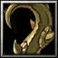

Benziena, the Rod of Earth
[Staff]
+7,300 Damage
+900 Intelligence
Active: "Wrath of Earth" Slows the Attack and Movement Speed of enemies in an AoE
Alchemist Specialty Enhanced Stone Golem (R,R): Increases the size and Health of Golem by 15%
Obtain :
Drops as Sealed Weapon from Mage Lord with 5%
Benziena, the Rod of Earth drops from Sealed Weapon shard with 100% for INT heros, and with 33% for Blood Weaver